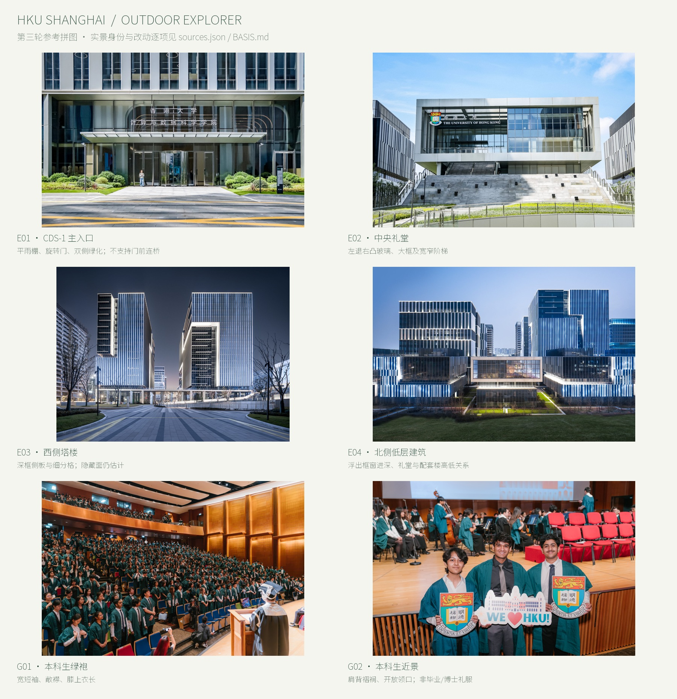
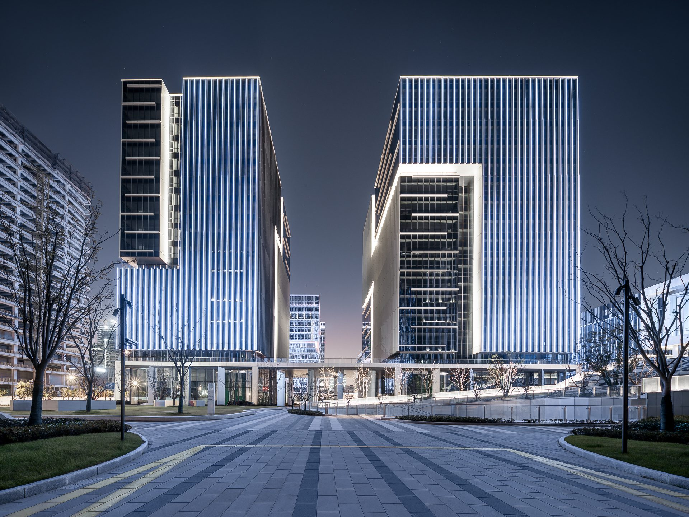
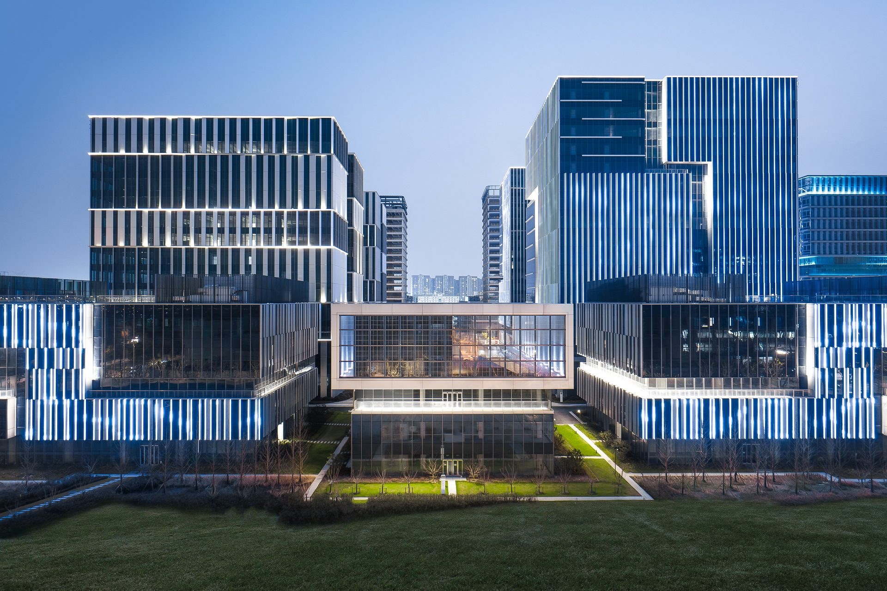
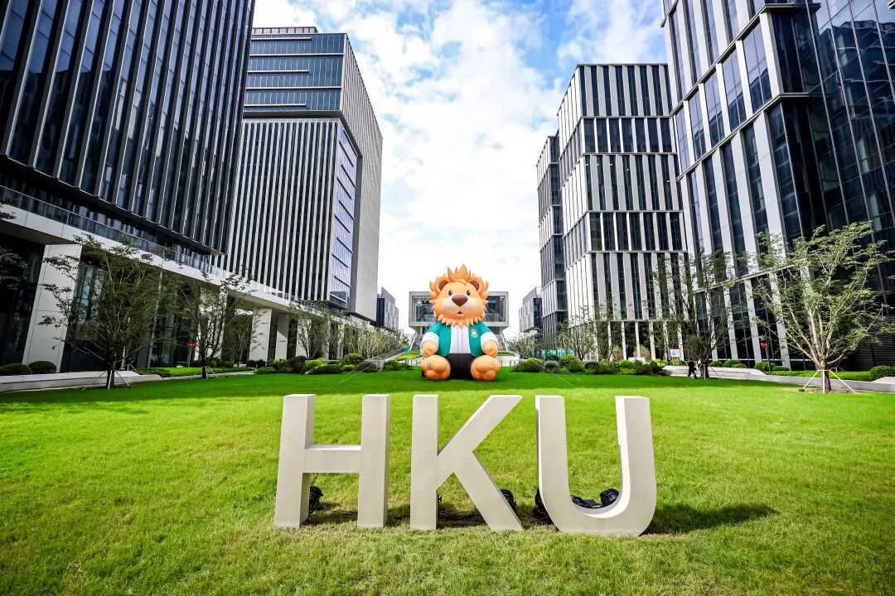
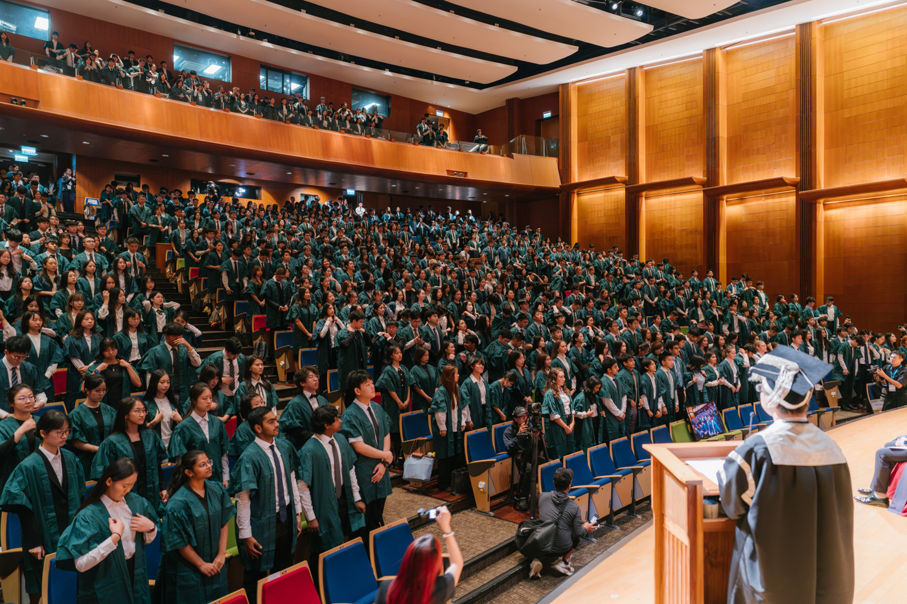
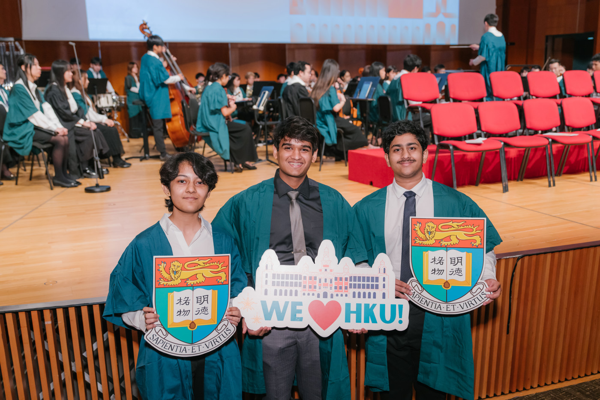

E01 · HKU CDS (Shanghai)
页面无发布日期；URL目录2026/09，不等于拍摄日


身份：官方CDS-1栏目，右侧实物门牌可读CDS-1；与既有R01同图
支持：中央旋转门、两侧门、薄平雨棚、两排文字、安防杆、两侧矮植栽及入口前黄色线；入口正前无塔间连桥
改动：补入口铺装和两侧景观、安防杆；去除前版跨主入口的暂定塔间连桥；保留已匹配的门厅比例
仍待确认：米制尺寸、人高参照约±25%；照片之外连桥节点不可确认

页面无发布日期；URL目录2026/09，不等于拍摄日
身份：官方CDS-1栏目，右侧实物门牌可读CDS-1；与既有R01同图
支持：中央旋转门、两侧门、薄平雨棚、两排文字、安防杆、两侧矮植栽及入口前黄色线；入口正前无塔间连桥
改动：补入口铺装和两侧景观、安防杆；去除前版跨主入口的暂定塔间连桥；保留已匹配的门厅比例
仍待确认：米制尺寸、人高参照约±25%；照片之外连桥节点不可确认
未注明拍摄日期；URL目录2026/07

身份：与设计方A06的中央低层礼堂体块对应；不是CDS-1
支持：大框下左退右凸的玻璃正面、门厅外露平台、大台阶中间窄步行段及两侧宽阶
改动：分出礼堂左侧退入玻璃和右侧前置玻璃；减少屋顶任意设备；大阶两侧改宽坐阶、保留中央通行
仍待确认：步数、层高、内部与楼后不确认；当前楼高和连接标高仍估计
图集拍摄时间未注明；同组2025-01-17竣工报道先于HKU装修

身份：西侧两栋密竖肋塔楼，通过A04航拍和总图定位；不是CDS-1
支持：错位大框、深侧板和框内细分格；同图转载不独立计数
改动：大框厚度1.3→3.6m(估计)，前置玻璃和框内竖分格；未强改无新增测量支撑的总体楼高
仍待确认：隐藏立面、大框对应楼栋及精确尺寸仍推断
未注明拍摄日期

身份：中央礼堂与两侧北部配套楼同时入镜，可与A04航拍对应
支持：两侧配套楼玻璃框的明显进深、礼堂低于背后塔楼
改动：配套楼北侧大框侧板由1.1→2.5m(估计)；不新增未知楼层
仍待确认：北侧场地后来变化、玻璃背后室内不可推断
正文显示2026-09-04；URL为09-02，不以URL替代发布日期；活动08-30

身份：图注明确张江基地南草坪；与既有C02/phase2-07构图对应，保守按同一照片组不增加独立证据
支持：现状草坪、HKU字母、两类塔楼、内侧廊架和年轻乔木；正文3号与5号楼用途
改动：保留南草坪而非旧规划水景；未加入活动充气狮子
仍待确认：无比例尺，不以标注推定每栋楼号位置；活动充气装饰不是永久建筑
2026-08-26活动及发布日期

身份：香港本部迎新，本文只作为服装参考，不作为上海建筑证据
支持：本科生深青绿色袍、短而宽的袖口、敞襟、白衬衫可见、膝上衣摆
改动：原创低模角色的短袖开襟袍形与褶裥
仍待确认：布料光照导致色差；不复制任何真实人物，身高1.76m为设定
2026-08-26

身份：前排三位学生穿绿袍；背景可见背部褶裥；不用于上海定位
支持：宽短袖、肩背褶裥和开放领口；未照搬手持校徽作袍上印花
改动：绿色袖筒、开放前片、白领、分离双腿；没有博士礼帽或彩色披肩
仍待确认：下摆被画面及道具遮挡，结合G01；只有同活动而非独立服装标准